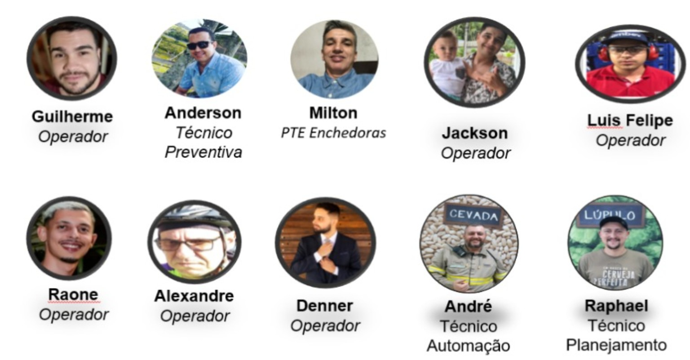

Equipe multidisciplinar
Time da Enchedora 02
Operação, preventiva, PTE, automação e planejamento atuando sobre os subconjuntos críticos.

Imagem-base da equipe. Luis Felipe removido do escopo conforme revisão solicitada.
Operação
Guilherme, Jackson, Raone, Alexandre e Denner.
Conhecimento do processo, identificação das perdas e validação operacional.
Manutenção e engenharia
Anderson — Preventiva
Milton — PTE Enchedoras
André — Automação
Planejamento
Raphael — Planejamento
Organização de recursos, sobressalentes e planos.